返回硬件项目索引
返回硬件项目索引Typhoon Capsule 飓风胶囊
阅读项目文档 ↓把一阵风装进“胶囊”，能做什么？
Typhoon Capsule 飓风胶囊是一台便携式模块化吹吸工具：接上尘杯与滤芯，它能收集桌面碎屑；换上气嘴，它能低压充气、抽走收纳袋里的空气。
从重新设计保护板、点焊电池包，到修改漏风中框，飓风胶囊在一次次返工中成形。它的另一半，是一个让建模新手也能参与创造的参数化网页。选择模板、调整尺寸、预览形状，再导出模型进行3D打印，就能尝试为自己的需求制作附件。 它也留下一个开放的邀请：下一种用途，由你来定义。


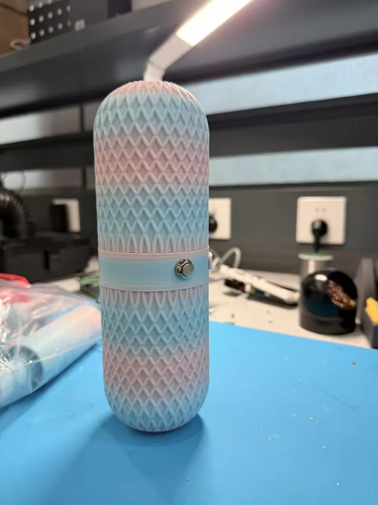
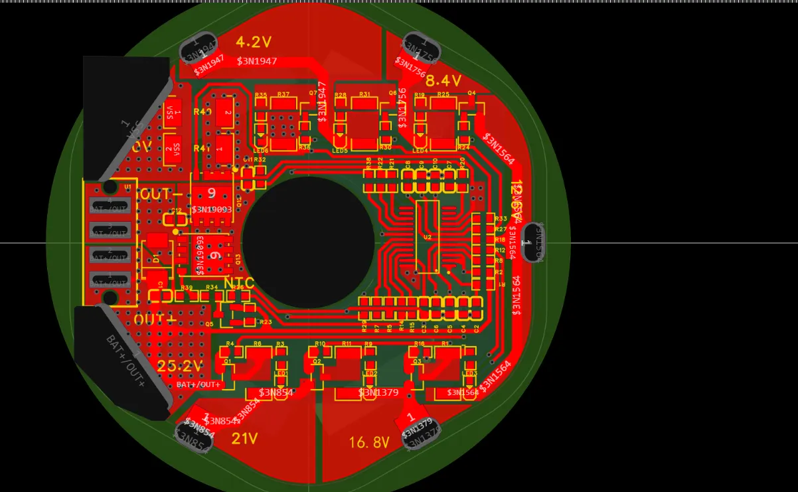
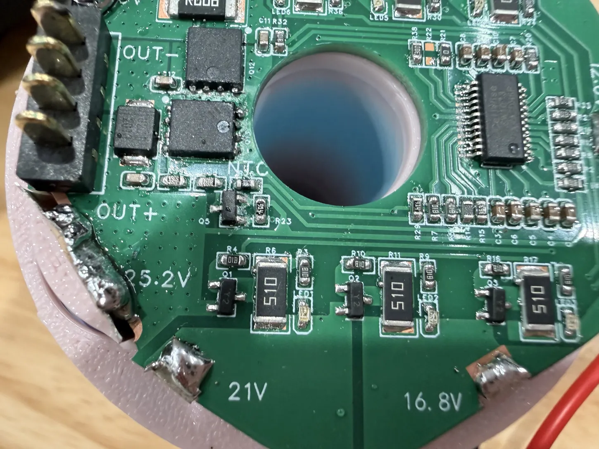
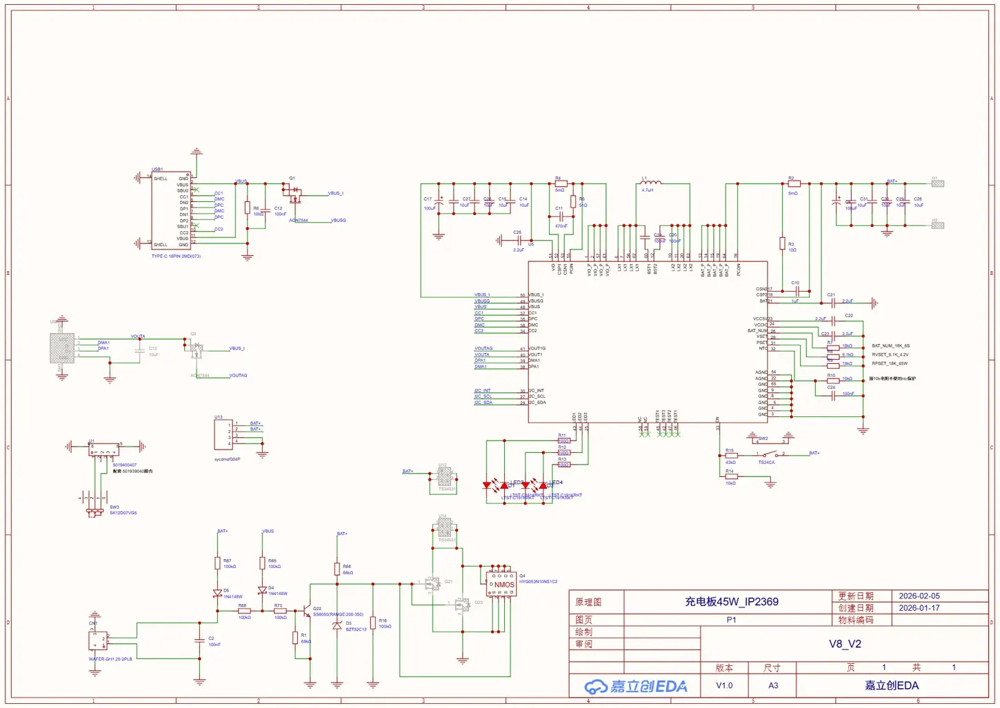
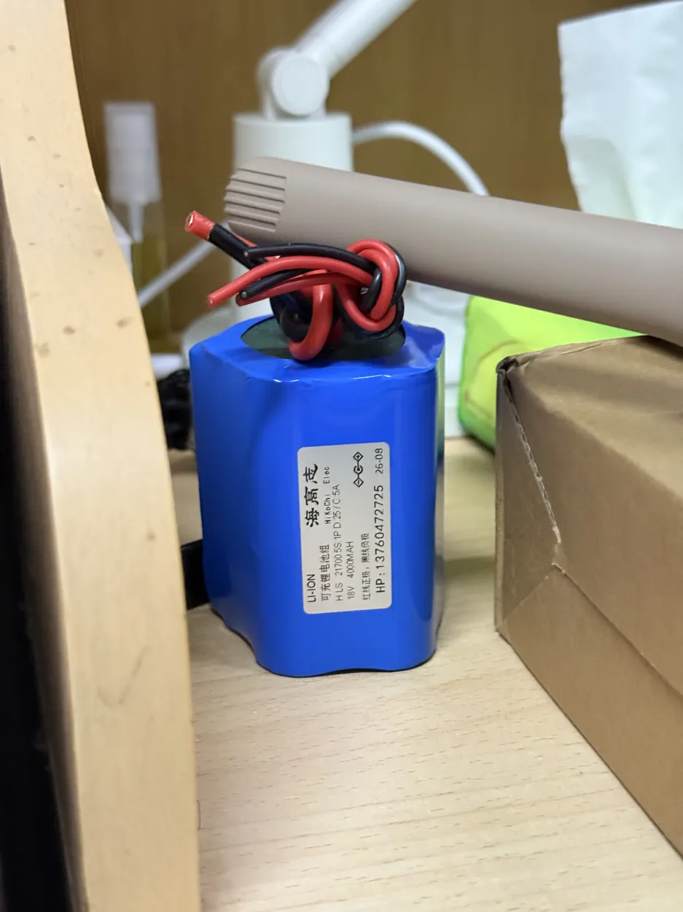
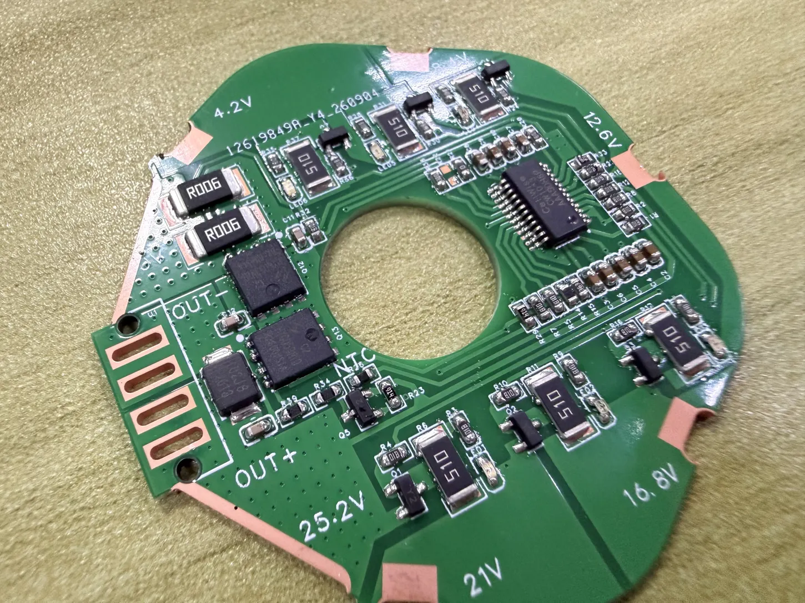
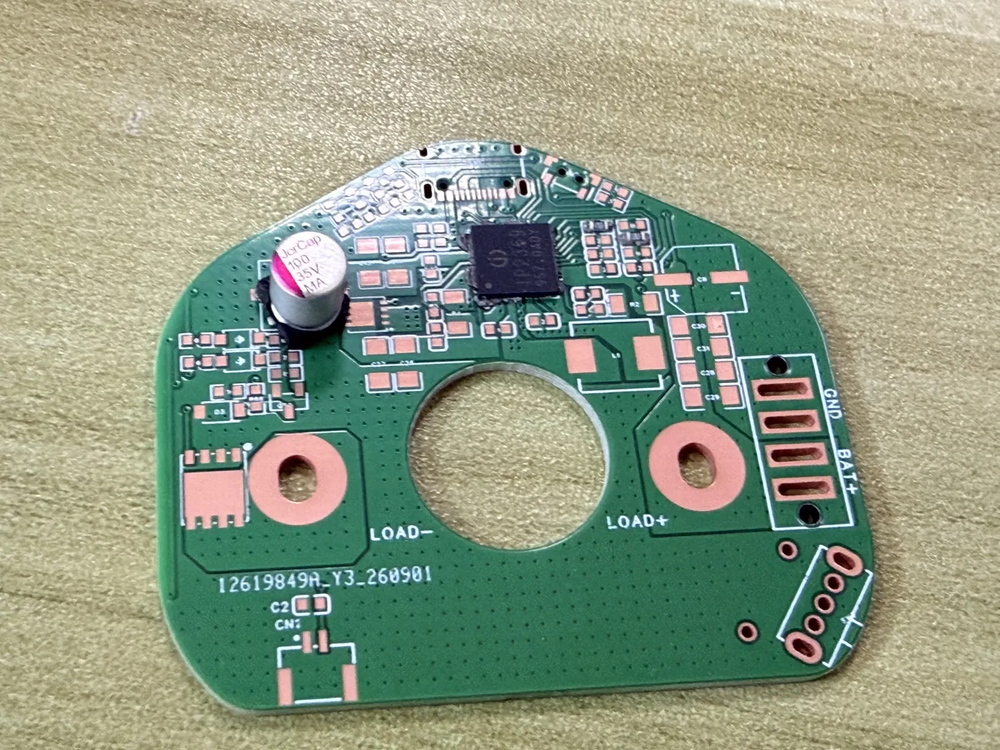
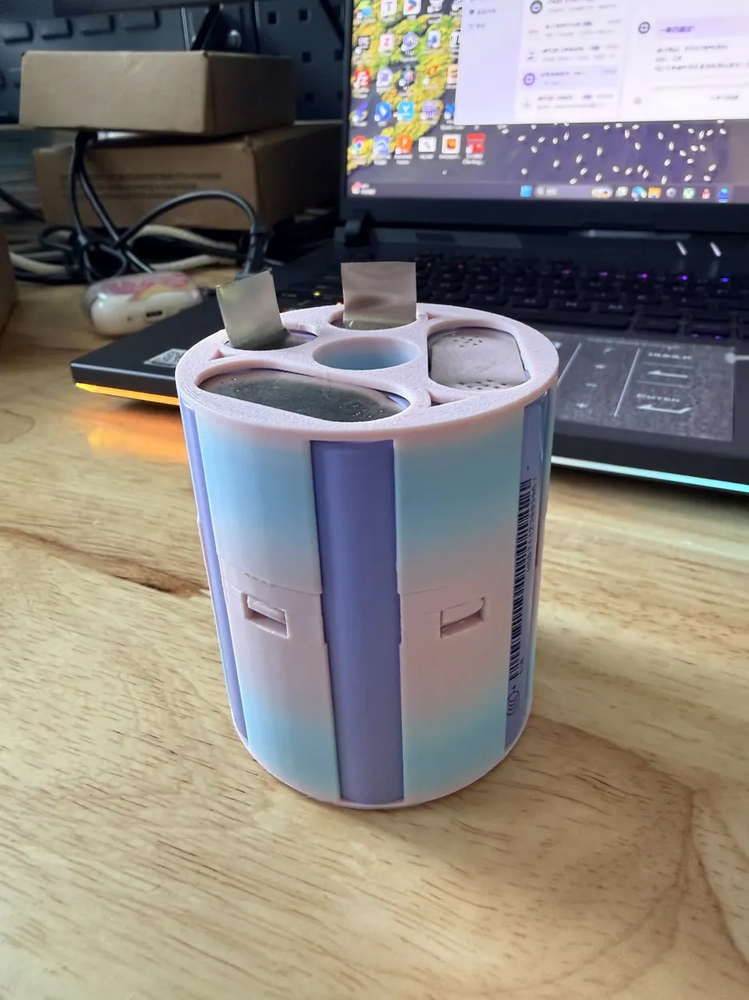
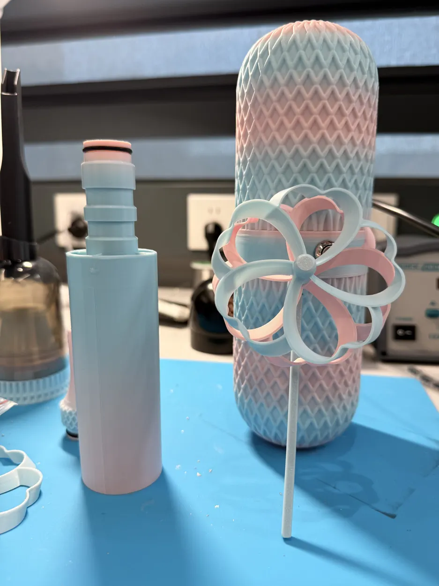
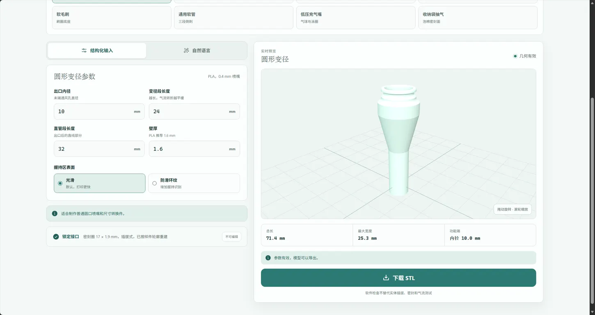

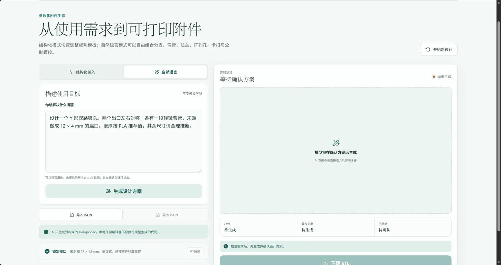
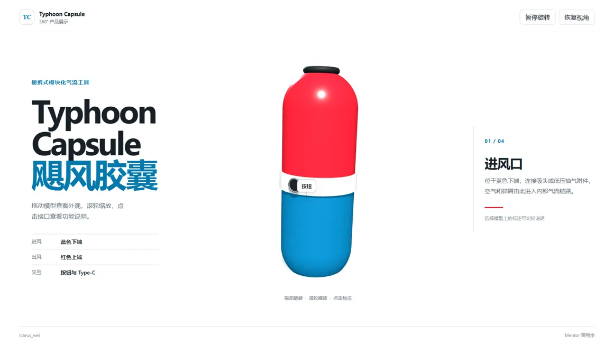
项目文档
Typhoon Capsule 飓风胶囊 项目介绍
Typhoon Capsule 飓风胶囊 项目介绍
一台气流主机，多种生活用途；一个参数化网页，让不会建模的人也能制作自己的附件。
作者：卢阳
Mentor：苗翔宇
项目形式：便携式模块化吹吸工具 + 360° 展示网页 + 参数化附件网页
轴流风扇vs离心风扇
> 📷
>
>
项目简介：让同一台工具适应不同需求
飓风胶囊是一台以戴森 V8 高速风机为核心的便携式模块化工具。它通过更换附件，完成吹风、带尘杯过滤的吸尘、低压充气（吹气球、桨板、充气泳池）和真空收纳袋抽气；同时，它还能通过 USB-C 为内置电池充电，或为手机、电脑供电。
这个项目最吸引我的地方，是同一套风机和电源可以适应不同场景。桌面有碎屑时，连接尘杯和吸头进行清理；需要充气或抽气时，换上相应转接附件；临时需要补电时，还可以使用 USB-C 输出。普通档与强档提供不同的气流强度，四颗 LED 用于显示电量。
项目的灵感来自“台风小药丸”及相关开源模型。我参考了已有项目的建模结构与空间布置，在制作过程中完成了电池保护板设计，并完成充电板的适配。我参与了原理图绘制、PCB 布局、焊接、调试和装配；结构建模则借助开源项目与 AI 辅助推进。
最终完成的功能
模块或功能 · 使用方式与成果
吹风与两档控制 · 使用戴森 V8 风机及原装驱动板，支持普通档和强档
吸尘与过滤 · 适配购买的尘杯和滤芯，实现吸入、过滤和收集
低压充气与抽气 · 通过不同附件完成低压充气、真空收纳袋抽气
USB-C 双向供电 · 可给电池组充电，也可给手机或电脑供电；电路按 45W 配置
电量显示 · 通过四颗 LED 显示电量状态
360° 展示网页 · 旋转、缩放查看外观，并了解主要接口的位置与用途
参数化附件网页 · 调整附件参数、预览模型、导出 STL；已完成附件打印并装到实机上。自然语言设计功能也已实现，需配置大模型 API
项目亮点：模块化不仅是“能换头”
1.1 从固定功能，变成可以继续扩展的工具
我希望飓风胶囊的用途能够随着需求增加。风机、电池和供电电路构成主机，不同附件负责适应不同对象。这样，每出现一种新需求，可以先考虑设计一个合适的附件，而不必重新制作整台设备。
这种模块化也要求各部分真正配合：附件需要装得上、连接处需要密封，尘杯与滤芯需要适配，电池和电路板也必须放进有限的外壳空间。制作过程中，我逐渐认识到，“可替换”只是起点，能稳定连接并完成实际用途才是模块化的价值。
> 📷
>
>
1.2 让不会建模的人，也能为自己的需求制作附件
我已经从网页导出附件，完成实际打印，并将打印件装到了机器上。这让参数化网页从展示工具走到了实体制作环节。不过，某一个附件能够装配，并不意味着任意参数组合都经过了验证；新的附件仍需要检查实际配合和使用效果。
📷
1.3 用网页把产品讲清楚
另一个网站是 360° 外观展示页。它支持自动旋转、拖动查看、滚轮缩放和恢复视角，也能查看进风口、出风口、Type-C 接口和按钮等位置的说明。
它解决的是展示中的一个问题：仅靠一张照片，很难解释主机两端和接口之间的关系。通过交互模型，老师和同学可以自己转动视角，理解设备的外形与布局。这个模型用于外观讲解，不作为制造尺寸或装配依据。
📷
项目成长：从第一版能用，到第二版更适合实际装配
1. 核心模块与选型
模块 · 最终选择 · 选型与实现考虑
风机与驱动 · 戴森 V8 风机、原装驱动板 · 作为吹吸主机的气流核心，沿用现有驱动完成运行与档位控制
电池组 · 6 节亿纬 21700、单节 4000mAh，串联组成电池包 · 从第一版 5S 方案迭代，增加储能，并重新适配内部空间
电池保护板 · 自行设计的 6S 保护板 · 配合六串电池采样、保护及整机结构布局需求
USB-C 充电板 · 参考开源方案的 IP2369 双向充电板，45W 配置 · 将电池充电和对外供电集中在同一个 USB-C 接口
外壳与中框 · PLA Basic 3D 打印件 · 借助开源模型与 AI 辅助建模，通过实物装配修改尺寸
尘杯与滤芯 · 购买后适配 · 与主机和吸头连接，形成吸尘过滤链路
交互控制 · 实体开关、四颗电量 LED · 完成日常操作与基本电量提示，暂未另加单片机
暑假前期我还参加了电赛，留给这个项目的时间比较紧张。因此，本期沿用风机原装驱动板，将时间主要投入供电、电路制作、结构装配和附件功能。另加单片机进行状态监测与控制，仍是未来的发展方向。
2. 从 5S 到 6S：续航问题推动电池重新设计
第一版使用了 5 节力神 4000mAh 电芯。实际使用时，我发现强档下的持续时间太短，不能很好地满足展示需求，因此决定重新设计电池部分。
第二版改用 6 节亿纬 21700、4000mAh 电芯，并重新设计六串电池保护板。这个变化涉及电池、电路和结构三个部分：增加一节电池后，需要相应的保护与充电配置，内部空间也要重新安排。
这里有一个我在介绍中需要说明的区别：串联增加电芯数量后，电池包容量仍为 4000mAh，增加的是总电压和总储能。若按相同单节标称电压与容量计算，六串相对于五串的理论储能增加约 20%；但实际续航还受到风机功率、电芯表现和保护条件等因素影响。
*第二版六串电池保护板 PCB。板形、中心避让空间和连接位置需要同时满足电路与整机装配需求。*
*保护板以 CW1073AAAS 为核心，围绕电芯采样、保护控制、功率通路和温度检测等部分展开设计。图中参数表示设计内容，不代表各项保护阈值均已完成实测验收。*
3. 定制电池装不合适：自己制作一体式电池包
电气规格合适，并不意味着零件一定能装进去。厂家定制的电池包不能很好地适配现有模型，这让我意识到，外壳并不是最后套上去的一层包装，它会直接影响电池的排列和连接方式。
为了适应结构，我使用点焊机连接镍片与锂电池，重新制作了一体式电池包。这一步把原本分开考虑的事情放到了一起：电芯怎么排、连接位置在哪里、保护板怎么放，以及最终能否装入中框。
对我而言，这次返工是一次很直接的学习：硬件制作既要关注电路功能，也要关注真实的形状、位置与装配关系。
> 📷 电池包迭代照片
>
>
4. 中框漏风：装得上之后，还要让气流走对地方
第一版中框存在漏风问题。零件虽然能够组合起来，但连接处不够严密，气流会从缝隙泄漏。
我随后修改了中框尺寸，并在零件结合处补充密封处理，其中使用了 502 胶封住部分结合缝隙。这是制作中实际采用的修补方式；如果后续继续优化，我希望把密封更多地融入结构本身，同时保留需要拆卸维护的位置。
这次调试让我体会到，风机的能力只是整机表现的一部分。连接处、风道和附件配合都会影响最终使用效果，机械结构也需要像电路一样反复检查和修改。
5. 密集贴片焊接：便携设计带来的制作难度
为了把电路放进便携式机身，PCB 上有很多间距较近的 0603 贴片元件。画图时它们只是屏幕上的小方块，到了实际焊接环节，操作空间和焊点检查就变得很具体。
焊接是整个过程中比较费力的一部分，也让我开始从“能否布下元件”之外考虑设计：焊接是否方便、器件是否容易辨认、出现问题后是否有空间检查和返修。这些细节会直接影响一个设计最终能不能顺利做出来。
*充电板 PCB：在有限空间中同时安排充电电路、连接端子和整机控制相关器件。*
*参考开源方案完成的 IP2369 充电板：用于 USB-C 与六串电池之间的双向电能转换，和电池保护板分工配合。*
> 📷 焊接过程照片
>
>
AI 使用说明：帮助理解与制作，也需要被验证
本项目主要使用了 ChatGPT 和 Codex，参与范围包括设计检查、故障排查、建模辅助和网页设计。AI 的帮助降低了我理解陌生模块、组织思路以及实现网页交互的门槛。
AI 参与内容 · 在项目中的作用 · 我的工作与判断
电路理解与设计检查 · 辅助解释模块作用、检查原理图和梳理疑点 · 对照原理图、器件连接和实际情况反复核对
故障排查 · 帮助整理可能原因与检查思路 · 结合焊接、装配和调试现象判断哪些解释成立
建模辅助 · 配合开源模型，辅助结构与附件设计 · 通过打印、装配和使用检查实际效果
AI 也出现过误判。在检查 45W 充电板原理图时，它曾分析错几个器件的作用。我多次追问、补充说明，它才逐渐理解到位。这件事让我认识到，回答写得完整、解释听起来顺畅，并不能证明它已经正确读懂了电路。
我学到的是把 AI 当作可以反复讨论的助手：它能帮助提出思路，但结论仍要回到原理图、器件资料和实物上核对；对于硬件表现，还需要实际测试。反复提问能帮助澄清误解，却不能代替验证本身。
项目中的开源模型、电路参考、AI 辅助与本人完成的制作工作各有分工。我希望把这些来源说明白，也把自己从中学到的内容说明白。
交流与心得
这个项目给我最大的收获，是理解了结构和电路必须放在一起考虑。第一版电池的强档持续时间不够，促使我修改供电方案；定制电池与模型不适配，促使我重新安排电芯并制作电池包；中框漏风，则让我继续修改尺寸与密封。每个看起来局部的问题，都可能牵动其他模块。
另一个收获是学会用实物验证 AI。AI 可以帮助我快速接触以前不熟悉的知识，但不能替我判断一块板是否焊好、一个附件是否装得上，也不能替我完成真实测试。把屏幕上的设计做成能拿在手里使用的东西，仍然需要耐心、动手和反复核对。
相比单个功能，我更想继续完善模块化与参数化附件这条路线。它让设备可以适应新的需求，也让不会建模的人有机会参与扩展。我已经体验过从网页调整参数，到打印出附件，再装到机器上的过程；这也是我最希望别人能通过这个项目体验到的部分。
特别感谢苗翔宇 Mentor。在项目推进过程中，他经常和我沟通进展，了解我遇到的阻力。即使人在美国、与国内有很长的时差，他也仍然保持联系。这种持续的关注与交流，让我在遇到问题时有人可以讨论，也帮助我继续推进项目。
也感谢相关开源项目提供结构模型与电路参考，让我能够在已有成果上学习、修改并完成自己的版本。
> 📷 交流记录
>
>
接下来想继续做的事
- 完善模块化附件：围绕实际需求增加附件，持续检查接口配合、密封和使用效果。
- 增加单片机状态监测：探索电压、电流、温度等状态显示与辅助控制。
- 补齐对照测试：记录两档续航、充放电功率和温升，为下一轮改进提供更明确的依据。
【自学笔记部分】
01｜锂电池的恒流恒压充电与六串保护原理
作者：卢阳｜项目：Typhoon Capsule 飓风胶囊
为什么学
第一版使用五节力神 4000mAh 电芯，强档持续时间感觉不太能满足展示需要；于是做了第二版，改为六节亿纬 21700、4000mAh 电芯，并重新设计保护板。这个变化提出了三个问题：为什么不能只多接一节电池？充电板和保护板为什么要分开？总电压正常，为什么还要检测每节电芯？
本篇用这些问题串起充电、采样、保护与均衡。
一、知识点：串联改变的是电压与储能
电池容量 Ah 表示电荷量，能量 Wh 还需要考虑电压。粗略估算关系是：
Plain Text
标称能量 E（Wh）≈ 标称电压 V（V）× 容量 C（Ah）
六节相同电芯串联，每节都流过同一电流。因此，每节都是 4Ah 时，串联组仍是 4Ah，不是 24Ah。电压相加，储能也随之增加。若仅为比较而假设单节标称电压均为 3.6V，则五串约 72Wh，六串约 86.4Wh，比例为 1.2。
但这不是续航增加 20% 的证明。六串供电可能改变风机输入功率，实际可用能量还受内阻、截止条件、温度和电芯一致性影响。续航应以同一使用任务、相近初始状态和相同停止条件比较。
常见误区：“4000mAh 就说明两组续航相同。”容量相同但电压不同，储能不一定相同；负载功率不同，运行时间也不相同。
二、知识点：恒流与恒压是两个不同的控制阶段
2.1 恒流阶段 CC
恒流是将充电电流维持在设定范围。充电器调节自己的输出，使电池电压随充电逐渐上升，而电流不超过允许值。不是把任意高电压直接接到电池上。
2.2 恒压阶段 CV
Plain Text
电池状态检查 → 必要时小电流预充 → 恒流 CC → 恒压 CV → 满足条件后终止
电压升高 电流减小
2.3 六串意味着什么
对于本项目按每节 4.2V 配置的六串系统，目标总电压是 25.2V。这个数来自六节相加，并不是所有锂电池通用的充电电压。
USB 侧电压和电池侧电压可能不同，需要电源转换。假设输入功率 45W、效率 90%、电池端电压 24V，则电池电流约为：
Plain Text
电池端电流 ≈ 输入功率 × 效率 ÷ 电池端电压
≈ 45 × 0.9 ÷ 24
≈ 1.69 A
这是功率守恒的估算，不是本项目实测；45W 也不是风机功率或电池容量。
三、知识点：充电管理与异常保护各负其责
部分 · 主要问题 · 不能替代什么
充电电路 · 正常充电应供给多少电流、限制到多少电压 · 不能只看总电压就知道哪一节异常
电池保护电路 · 哪节电压异常，是否过流或过温，何时断开通路 · 不能替代正常充电的 CC/CV 控制
均衡电路 · 怎样减少串联电芯之间的电荷差异 · 不能修复损坏电芯或明显容量衰减
可以把充电器理解为负责日常调节，保护板负责检测越界并控制通路。但不能把“每次都充到保护板断电”当成合理的正常充电终点。
四、知识点：单体电压是相邻节点的差值
设串联组从负端开始的节点为 B0～B6：
Plain Text
B0 ─[电芯1]─ B1 ─[电芯2]─ B2 ─ … ─ B5 ─[电芯6]─ B6
第三节电压是 V(B3)-V(B2)，不是 V(B3)-V(B0)。后者包含前三节的电压。PCB 上的 4.2V、8.4V 等是理想满电情况下的累计节点标注，运行中不恒定。
举例：六节为 4.30、4.10、4.10、4.10、4.10、4.10V，总和为 24.80V，低于 25.2V，但第一节已高于该电芯假设的正常上限。这是必须逐节监测的原因，而不是可执行的充电实验。
采样输入前的电阻、电容可限制干扰进入检测端。它们会引入动态响应，参数不能只凭“滤得越平越好”增大。连接顺序、空置通道处理也必须按芯片应用要求执行。
五、知识点：保护阈值、延迟与恢复条件
保护并非只有“高了断、低了开”。完整描述至少包括：检测对象、阈值、持续时间和恢复条件。
例如教学设定为“超过某阈值持续 T 秒后断开”，短暂噪声与持续异常就会得到不同处理。恢复阈值可以与触发阈值不同，这种差值称为迟滞，作用是避免在边界附近反复开关。具体数值要按电芯、负载及芯片版本确定。
过流检测常将分流电阻上的压降换算为电流：
Plain Text
采样电压 = 电流 × 采样电阻
保护触发电流 ≈ 检测电压阈值 ÷ 采样电阻
我的原理图 R40、R41 各为 6mΩ，并联得到 3mΩ。若假设检测阈值为 100mV，则计算值约 33.3A。这解释了图中“33A”标注的可能依据，但不证明所购后缀实际采用 100mV，更不代表 PCB 可以长期通过 33A。
同样电阻在 20A 下产生 60mV 压降和 1.2W 总损耗。检测电阻自身也需要额定功率、焊盘和散热条件。
六、知识点：被动均衡怎样减少差异
被动均衡通过受控耗能支路，让某些电芯流过额外的旁路电流，消耗部分能量。它没有把这部分能量搬给低电量电芯。主动均衡才涉及电感、电容等方式的能量转移。
理想化单节旁路中，若 4.2V 加在 100Ω 上：
Plain Text
旁路电流 I = 4.2 ÷ 100 = 0.042 A = 42 mA
电阻功耗 P = 4.2² ÷ 100 = 0.1764 W
对照自己的保护板
七、知识点：温度保护取决于实际测到了哪里
NTC 的电阻随温度升高通常下降。芯片将阻值变化解释为温度信息，但前提是型号曲线匹配、连接正确、传感器与被测对象有合理热接触。
保护板图上有 NTC；充电板图上 NTC 输入却标注使用固定 10kΩ 电阻。固定电阻不能反映电池真实温度。也不能因为另一块板有 NTC，就自动认为电芯、功率器件和外壳都被准确测到了。应记录传感器实际安装位置和响应，而不是只在框图上写“温度保护”。
作业
1. 用自己的话说明：充电板与保护板为什么不能相互替代？
2. 若 B2=8.05V、B3=12.12V，第三节电压是多少？
3. 两个 6mΩ 并联，在 15A 下计算压降及总损耗。
4. 以 4.2V、150Ω 理想旁路估算均衡电流、功耗，以及消除 84mAh 差异的连续工作时间。
5. 图上有“33A 过流保护”，列出至少三个仍需确认的条件。
6. 给自己的保护板建立一张“已知／待查”表，至少包括芯片后缀阈值、采样电阻、均衡电流和 NTC 位置。只读资料，不进行过充或短路实验。
检查标准
1. 正常充电调节与异常通路切断不同；总压管理也不能替代单体检测。
2. 12.12-8.05=4.07V。
3. 3mΩ；45mV；0.675W。
4. 28mA；0.1176W；3 小时。实际启停和分时会改变时间。
5. 后缀检测阈值与误差、延迟、分流电阻实际阻值、寄生压降、MOSFET 和 PCB 的温升能力等；任列三项并解释即可。
6. 数值必须带来源；找不到就写待查，不能用芯片系列范围冒充具体器件配置。
你应该知道
- 能区分 Ah、Wh、充电功率与负载功率。
- 能解释 CC、CV、终止的先后关系。
- 能用相邻节点差计算单体电压。
- 能把保护条件说完整，而不只背一个电流数字。
- 能解释均衡的能力边界，以及芯片支持不等于实板验证。
拓展阅读
- 上文 CW1073 手册重点读均衡与串数配置；搜索引擎标题可能误标 CW2017，应以 PDF 正文型号为准。
02｜MOSFET 在电池保护和负载开关中的应用
作者：卢阳｜项目：Typhoon Capsule 飓风胶囊
为什么学
风机主回路可能流过较大电流，普通小按钮不一定适合直接承载。保护芯片也不能自己让全部负载电流穿过内部逻辑电路，需要功率器件执行通断。
MOSFET 正是需要掌握的器件。本篇围绕“怎样打开、为什么发热、为什么关了还可能导电、为什么两颗反向连接”四个问题展开。
一、知识点：G、D、S 与控制参考点
以增强型 N 沟道功率 MOSFET 为例：G 是栅极，D 是漏极，S 是源极。栅极控制沟道状态，但控制量不是“栅极相对随便一个地的电压”，而是：
Plain Text
VGS = VG − VS
栅源电压 = 栅极电位 − 源极电位（电位须相对同一参考点）
若 G 对电池负端为 10V，S 对电池负端也为 10V，则 VGS=0V，不能说它被 10V 打开了。若 G=12V、S=2V，则 VGS=10V。
这在保护板断开、输出负端浮动时尤其重要。图上写 VSS、BAT-、OUT- 的地方，不应仅凭名字都视为同一节点。应沿导线确认 MOSFET、采样电阻把哪些节点分开。
P 沟道器件的控制极性不同，不能套用 N 沟道的正栅压开通结论。读图的第一步应是查清器件类型与引脚。
二、知识点：阈值电压不等于充分导通电压
假设某器件阈值为 2V，却只在 VGS=10V 时保证某个低导通电阻。用 3.3V 控制它，不能仅凭“3.3 大于 2”就认定可用。它可能已有电流，但压降和损耗仍很大。
可以把“开始通”和“适合当低损耗开关”分开记。以后加入单片机时，也不能默认 GPIO 可以直接驱动现有全部功率管；还要核对驱动电压、栅极电荷和切换速度。
三、知识点：导通损耗为什么对电流敏感
开关充分导通时，可用导通电阻近似计算：
Plain Text
VDS ≈ I × RDS(on)
导通压降 ≈ 电流 × 导通电阻
导通损耗 ≈ I² × RDS(on)
≈ 电流的平方 × 导通电阻
假设 20A 流过 5mΩ，压降为 0.1V，损耗为 2W。电流增加到 30A，同样电阻下损耗变为 4.5W。电流只增加一半，损耗却超过两倍。
两瓦损耗不意味着温度只升高两度。温升还取决于封装、焊接、铜面积、环境及气流。
数据手册中的额定电流通常依赖特定散热条件。器件标题写很大的电流，不代表焊到任何小板上都能达到它。本项目的便携外壳限制了散热空间，因此导通损耗必须与板子、线材、连接器一起考虑。
四、知识点：体二极管让单管关断不等于双向隔离
常见分立 N 沟道功率 MOSFET 的体二极管从源极指向漏极，即阳极在 S、阴极在 D。关断沟道后，若外部电压使该二极管正向偏置，电流仍可能通过。
Plain Text
单管关断：沟道关闭，但体二极管还在
双向隔离：必须分别检查两个电流方向是否都被阻断
充分开通时，沟道可允许双向电流流动；不要因此又误认为关断也能双向阻断。需要区分“沟道导通方向”与“体二极管方向”。
在电池系统中，充电和放电方向相反。只放一颗 MOSFET 时，可能能切断一个方向，却允许反方向经过体二极管。判断电路时应分别画出充电、放电路径。
五、知识点：背靠背 MOSFET 为什么有效
状态 · 能得出的结论
两管都关断 · 在额定条件内可阻断两个方向；仍有漏电，并非机械空气间隙
两管都开通 · 电流通过两段导通电阻，损耗需要相加
一开一关 · 必须沿具体体二极管方向判断，不能一概说完全断开
若每颗都是 5mΩ，串联后为 10mΩ；20A 下总导通损耗为 4W。保护能力增加，也带来电阻和热量，这就是器件选型与散热必须一起考虑的原因。
六、知识点：栅极为什么需要驱动与辅助器件
6.1 栅极电荷
栅极稳态电流很小，但切换时要充放电，不能理解为完全不需要驱动能力。用简化关系 t≈Qg/I 估算，30nC 栅极电荷、10mA 平均驱动电流，对应约 3μs；这里只帮助认识数量级，不替代真实驱动波形和米勒平台分析。
切换太慢时，器件可能在较大电流与较大 VDS 同时存在的区间停留更久；太快又可能增加振铃和干扰。因此驱动电阻并非越小越好。
6.2 下拉与串联电阻
栅源下拉为控制端未驱动时提供确定的关断状态，并释放残留电荷。串联栅极电阻用于影响充放电速度和振铃。数值要结合驱动器、栅电荷与布局决定，不能照着另一块板随意替换。
6.3 稳压保护
稳压管常用于限制栅源电压，但必须看实际两端连接。
电池包电压 25.2V 不意味着允许把 25.2V 直接加到栅源之间。VDS 与 VGS 是不同的额定值。
七、知识点：结合项目读器件
按下面顺序读图：
1. 找到元件位号和完整型号。Q 是位号前缀，不保证它一定是 MOSFET。
2. 核对符号和型号：本图 SS8550 是 PNP 三极管，不能套用 G、D、S。
3. 确认功率管的 S、D、G，沿线找到控制端和主电流端。
4. 单独画出体二极管方向，再分别判断充放电路径。
5. 检查辅助驱动管、电阻与稳压管，计算相对于源极的控制量。
6. 将“原理图画了什么”与“实板焊了什么”分开记录。
八、知识点：验证开关电路应该观察什么
纸面检查可先完成器件类型、额定值和电流路径核对。实际测试时，关注 VGS、导通压降、温升及切换波形，而不是只看风机是否转动。
普通台式示波器探头地夹通常与保护地相连，不能随意夹到浮动功率节点；应由具备条件的人选择合适的差分或隔离测量方案。电池也不能用万用表电流档直接跨接两端测“能输出多大电流”。这些都不是本篇作业要求。
作业
1. G 对参考点为 11V，S 对同一参考点为 8V，VGS 是多少？能否仅据此判定充分导通？
2. 一颗管在当前条件下为 4mΩ，通过 25A，求压降和损耗；两颗串联呢？
3. 为什么“栅极拉低”有时不能完全阻止电流？请画出单管体二极管。
4. 某管只提供 10V 下的 RDS(on) 保证值，VGS(th)=2V。能否直接认定 3.3V GPIO 驱动可用？
检查标准
1. 3V；还需数据手册在此驱动下的导通能力等信息。
2. 单颗 0.1V、2.5W；两颗串联 0.2V、5W，假设温度和电阻不变。
3. 沟道关闭但体二极管仍存在；N 沟道常见分立管标 S 为阳极、D 为阴极，并解释偏置方向。
4. 不能。阈值是小电流条件，不能替代低导通电阻保证；还要评估驱动动态能力。
5. 看不清或缺型号就标待查。若选择 SS8550，必须纠正它属于三极管，不能给它编造 S/D/G。
你应该知道
- 判断开通先算 VGS，不只看栅极对地电压。
- 阈值、导通电阻、耐压与额定电流不是一回事。
- 会计算导通损耗，知道两管串联损耗相加。
- 能说明体二极管与背靠背连接的作用。
- 能分清位号、网络名称、型号和实装状态。
拓展阅读
- 上文 Nexperia AN11158：重点读阈值、导通电阻、热参数和安全工作区；不要把不同测试条件的数据混在一起。
- 上文 Nexperia 应用手册：按 reverse battery protection、body diode、gate drive 等关键词阅读，先理解原理，再回到自己器件的手册。
03｜大电流 PCB 与电池包的连接设计
作者：卢阳｜项目：Typhoon Capsule 飓风胶囊
为什么学
飓风胶囊把电池、电路板和风机装进有限空间。制作时，既遇到了定制电池不能适配模型的问题，也遇到了密集贴片焊接的困难。这些问题说明，电路图里的“同一个节点”，到了实物上会变成铜皮、焊点、镍片、导线和连接器；每段都有电阻，也需要空间。
本篇将 PCB 与电池包连接放在一起学习：它们都在解决如何把较大的电流可靠送到负载，同时控制压降、发热与机械应力。点焊部分讲原理和质量判断，不提供脱离设备、电芯端盖及连接片规格的通用参数。
一、知识点：导线不是理想的零欧姆连接
导体电阻的简化关系为：
Plain Text
R = ρ × L ÷ A
电阻 = 电阻率 × 长度 ÷ 横截面积
压降 = I × R
损耗 = I² × R
其中 ρ 为电阻率，L 为长度，A 为横截面积。导体越长，电阻通常越大；截面积增加，电阻通常减小。铜皮截面积是“宽度×厚度”，不能只看屏幕上画得宽不宽。
假设整条连接路径有 10mΩ，在 20A 下压降 0.2V，发热 4W。若一个不良接头额外增加 5mΩ，又会集中产生 2W 热量。这解释了为什么有时整体线材看起来够粗，某个焊点却很热。
电池到负载的路径至少应检查：电芯连接片、焊接点、端子、导线、PCB 收窄位置、采样电阻、MOSFET 以及回程。只优化正端而忽略负端，回路仍然存在瓶颈。
二、知识点：铜皮、收窄处与过孔
2.1 大面积不等于整条路径都够宽
大片铜皮若在端子附近收窄，主电流仍要穿过那一小段。看 PCB 时应沿电流方向逐段找最窄处，而不是数红色面积有多少。过孔、焊盘颈部和器件引脚处也可能限制通流。
开孔会迫使电流绕行。本项目中间有较大避让空间，布局时需要同时考虑两侧通路、器件摆放及结构强度。
2.2 过孔连接不同层
过孔可将电流或热量引到另一层，但它不是无阻抗的柱子。孔径、孔壁铜厚、数量、位置和上下层铜形状都会影响效果。多个过孔分担电流，也需要合理分布，不能把所有过孔都挤在远离实际换层位置的地方。
2.3 热焊盘与焊接的取舍
大铜面散热好，但手工焊接时也会带走热量。热焊盘的细连接可以改善可焊性，却也改变通流与散热路径。大电流端子是否使用这种连接，要根据通流、工艺与温升一起判断，不是一律取消或一律保留。
三、知识点：电流采样为什么要单独“取电压”
采样电阻常只有毫欧级，电压只有几十毫伏。若测量线从远处取点，就可能把铜皮压降也算进去。
例如真实分流电阻 3mΩ，20A 时压降 60mV；测量路径若混入 1mΩ 铜阻，读到 80mV。仍按 3mΩ 换算，就得到 26.7A，明显偏高。
Plain Text
主电流 ─────[ 采样电阻 ]───── 主电流
│ │
└─测量─┘ 从电阻两端独立取样
在本板中，R40/R41 并联后还涉及两个电阻的连接对称性。不能只把两条细线接到任意一个“大铜面”就认为完成了 Kelvin 取样；应对照芯片参考布局、实际焊盘与电流方向检查。
四、知识点：开关电源布局要看回路，不只看距离
电流变化快的路径会受到寄生电感影响。用关系 V=L·di/dt 认识其数量级：若寄生电感 10nH、电流在 100ns 内变化 10A，对应约 1V 的感应电压。实际波形还取决于完整寄生网络，这个计算只是说明短导线也可能重要。
因此，要从开关器件、输入/输出电容和功率节点构成的闭合回路分析布局。不能把“电感靠近芯片”当成全部要求，也不能把开关节点铜皮无限放大。高 dv/dt 区域过大可能增加耦合。
回流路径是什么
从正端到负载只是半个回路，还需要返回电源。若地平面被槽或断裂隔开，回流可能绕远，增加回路面积。敏感采样线经过噪声回路附近，即使电气连接正确，也可能得到不稳定信号。
“所有地最终相连”不代表它们在快速变化时完全等电位。布局要考虑电流实际走哪条路，而不是只检查网络名相同。
五、知识点：温升来自损耗和散热条件共同作用
常用简化估算为 ΔT≈P·Rθ，但热阻必须对应相近的安装与散热条件。不同铜面积、封装焊接、外壳和气流下，不能照搬同一个温升值。
本机有风机，不代表每个器件都会被有效冷却。PCB 若位于气流绕过的位置，风量再大也不能直接证明其温度合格。散热过孔还需要连接到有作用的铜面，芯片底部焊盘也需要形成合理热通路。
六、知识点：电芯排列与电气串联不是同一张图
电气图要求前一节正端连接后一节负端；机械排列则要考虑圆柱电芯怎么放、正负极朝向、镍片跨接位置以及线束出口。
本项目厂家定制的电池包不能很好适配模型，因此重新排列并用点焊方式制作一体式电池包。这个经验可转换成设计方法：先用不带电的尺寸模型确认布局，编号电芯和节点，再绘制连接关系，最后由具备条件的人实施装配。不要到焊接时才临时决定哪条镍片跨到哪里。
六串单并结构每一串都承受整机电流，不会因为有六节电池，就让每节只承担六分之一。电芯、连接片和端子都要按实际主回路条件选型。
同时要区分主电流线与电压采样线。细采样线用于读取节点信息，不承担风机主电流；它的绝缘和防磨损仍然重要，因为连接的是不同电池节点。
七、知识点：点焊靠局部电阻发热形成连接
电阻点焊通过电极施压和短时大电流，使连接界面局部发热并形成焊接。可用 Q≈I²Rt 理解热量与电流、时间、电阻的关系，但焊接中接触电阻会变化，实际控制还依赖压力、材料、表面状态和电极形状。
怎样认识焊接质量
外观只是一个角度：焊痕并不直接等于低电阻和足够强度。工艺验证还要考虑试样的机械强度、接头电阻、重复性和是否造成端盖损伤。机械破坏性检查应在规定试样上完成，不要求对成品电芯做剥离实验。
八、知识点：绝缘、固定与检修空间也是电路设计
正极端附近、连接片边缘、采样线跨越处和 PCB 背面，应按实际结构安排绝缘与防磨损措施。打印外壳不能自动替代电池专用绝缘，502 等胶也不能被当作未经验证的主要电气绝缘方案。
机械固定应避免振动把力传到焊点。线束出口需要留合理余量和应力释放；螺丝、毛刺、尖角不能压向电芯或绝缘层。装配空间还要包含绝缘厚度、焊点高度和线材弯曲，而不只是裸电芯的直径。
如果为了便携把元件挤得过紧，焊接和返修会困难。本项目 0603 元件密集的经历说明，在 PCB 上留操作空间有直接价值。
作业
1. 20A 流过新增 5mΩ 接触电阻，压降和发热各是多少？为什么这比同样热量均匀分散更值得关注？
2. 真实 3mΩ 采样电阻串入 0.5mΩ 寄生测量路径，实际电流 18A。按 3mΩ 换算会得到多少？
4. 为六串电池画不带尺寸的节点图和机械草图，说明两张图为什么不能相互替代。
5. 为什么“焊点有痕迹”“镍片更厚”“过孔更多”都不能单独作为可靠性的证明？
6. 写一份本项目装配前尺寸检查表，不少于六项。此题只做纸面检查，不要求重新点焊电池。
7.
检查标准
1. 0.1V、2W；热量集中在小区域，可能造成局部高温，且接触状态可能进一步变化。
2. 测到 18×0.0035=0.063V，换算 21A，比真实值高约 16.7%。
3. 主回路必须包含返回路径；截图不能确认铜厚、孔壁、底层完整连接及实装状态。
4. 节点图保证电气串联正确；机械草图检查朝向、跨接、绝缘、出口和空间。
5. 分别缺少强度/电阻证据、工艺适配证据、位置与制造参数证据。
6. 可包括电芯实际尺寸、绝缘厚度、连接片和焊点高度、保护板高度、线束弯曲空间、端子位置、紧固件侵入、装配顺序和检修空间。
你应该知道
- 能用压降和损耗理解毫欧级电阻的影响。
- 看 PCB 会沿完整回路找瓶颈，而不只看铜皮面积。
- 能解释 Kelvin 采样和回流路径。
- 知道点焊参数依赖材料、端盖与设备，不能凭经验数值通用。
- 能把电池连接、绝缘、固定和空间一起纳入设计。
拓展阅读
- 上文 TI 两份布局资料：先读电流采样与功率回路，不必一次掌握全部开关电源设计。
- 上文 AMADA 资料：重点理解材料与焊接质量的关系，不直接移植工业设备参数。